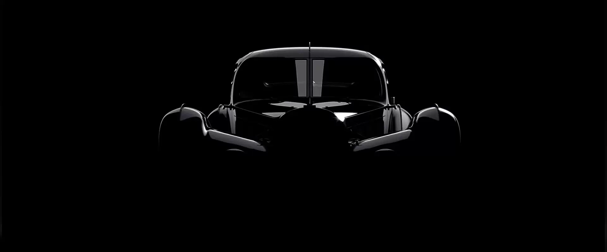
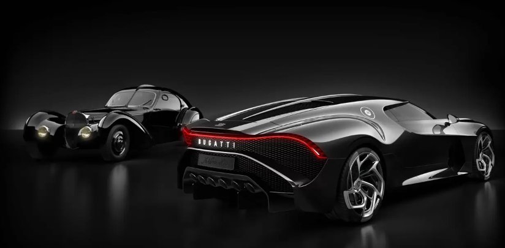

LA VOITURE NOIRE
REMINISCENCE OF AN ICON
A pioneering spirit, passion for perfection and the desire to continually redefine its limits have been the key characteristics of BUGATTI since it was founded more than 110 years ago . None of the brand’s masterpieces reflect these values more impressively than the Type 57 SC Atlantic. Created by Ettore Bugatti’s eldest son Jean, the only four Atlantics ever created stand for pure elegance and sophistication.
With its homage to the fourth, all-black Atlantic, missing since the Second World War, BUGATTI is bringing the speed, technology, luxury and aesthetics of an icon into a new era. But the customized creation of “La Voiture Noire” is far more than a modern interpretation of the ghost of the gran turismo. “La Voiture Noire” is a tribute to BUGATTI’s own history, a manifesto of the BUGATTI aesthetic and a piece of automotive haute couture.
